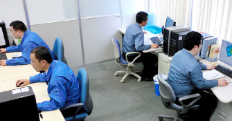
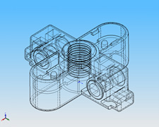
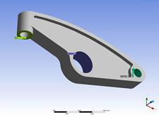
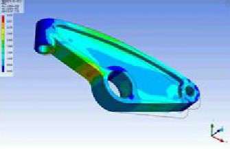
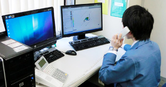

- HOME
- 製品設計

パートナーとして、お客様と一緒に。ゼロから設計いたします。
当社では、長年の実績で培ったプラスチック成型・金型技術に、3D-CAD：SolidWorks、構造解析：ANSYS DesignSpaceなどを駆使した設計・解析技術を融合させ、完全オーダーメイドによる新製品・新技術の製造・開発を行っています。製品設計時には、樹脂3Dプリンターを用いた製品の試作、さらに正確な評価も実施。エンジニアプラスチック製品のスペシャリストとしてお客様と共に、お客様のニーズを満たす製品を設計いたします。
3D-CAD（SolidWorks／Unigraphics／TOPsolid）

3D-CADは仮想の3次元空間上で3Dモデルを作成できるツールで、工業製品・部品等の設計や技術ドキュメント作成の際に必要な手作業での作図を自動化することができます。3D-CADを使用すると形状を立体的に検証でき、また設計者だけではなく、エンジニアなどの専門技術者たちと作成した形状（3Dモデル）を共有することも可能です。
三光化成では、新規部品の受託開発や構造・流動解析において3D-CAD：SolidWorksをインターフェースとして採用しております。設計業務はもちろん、3D-CADの利点を活かして各専門技術者やお客様、さらに金型メーカーとの連携を図りながら、設計を進めていきます。
構造解析（ANSYS DesignSpace）

工業用製品・部品の設計において、コンピューター上で設計の問題点等を評価するCAE解析は欠かせないプロセスの一つです。当社では構造・熱解析：ANSYS DesignSpaceソフトを導入し、製品設計における解析、またお客様からのご依頼を受けて行う受託解析に活用しています。

製品設計に構造解析を導入することで、たとえば強度上問題があると思われる部分を設計段階で把握し、問題をクリアするための形状を提案することが可能になります。また構造・強度上の影響がない部分を把握できれば、その部分を意図的に凹形状とすることで（肉盗み）、製品の軽量化・コストカットを図ることも可能。このように当社では、製品設計と構造解析を合わせることで設計提案の信頼性の向上に努めています。
流動解析（Autodesk Simulation Moldflow）

射出成形時に、どのように樹脂が流動・充填されるかをシミュレーションし、解析するソフトウェアです。
従来はトライ&エラーを繰り返して試作品を完成させていましたが、この方法では開発コストの増大や納期遅延を招いてしまいます。設計に流動解析を取り入れれば、成型の過程で発生する成型不良や問題点を、設計段階で把握することが可能に。複雑な形状の製品でも成型プロセスを事前に検証し、設計の最適化を図ることができます。量産時の不具合発生といったトラブルの回避につながり、高品質な製品の早期量産化・市場への早期投入を可能にします。